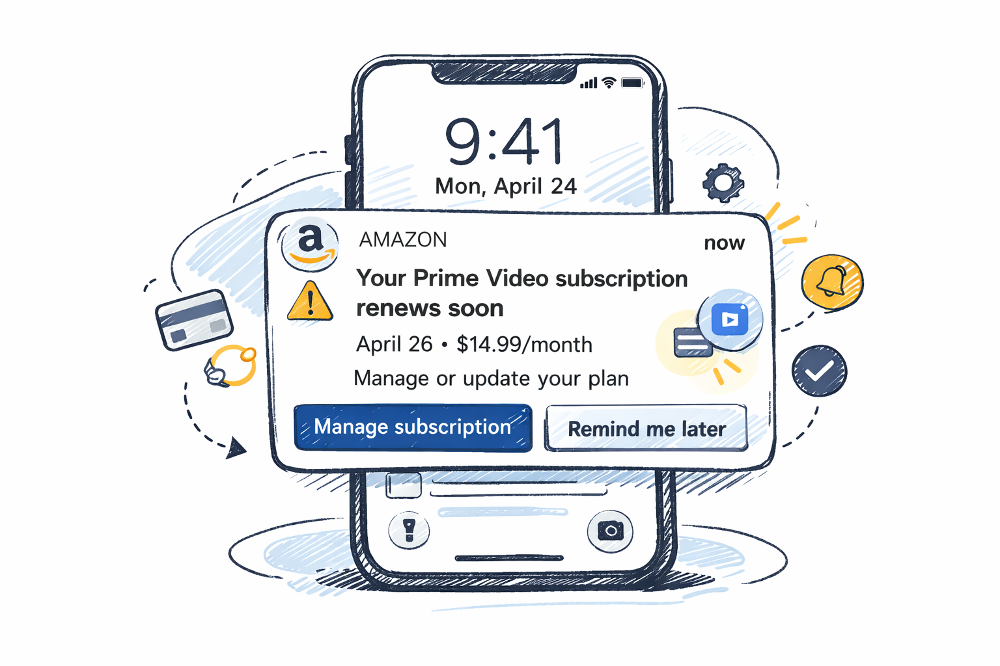
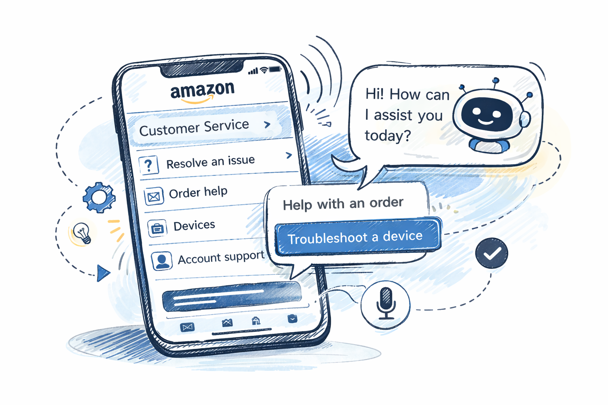

Case Study
AI-Powered Support & Conversational UX (Amazon)
I led the design of proactive, AI-driven customer support experiences that helped customers resolve common issues—such as unknown charges, delivery disruptions, and subscription management—directly within the Amazon app. By anticipating friction and guiding resolution through multimodal conversational flows and automated self-service paths, this work reduced uncertainty-driven contact volume and enabled faster, more confident problem resolution without human escalation.
Problem
I led the design of proactive, AI-driven customer service experiences that reduced uncertainty-driven support contact by anticipating issues and enabling fast, self-service resolution across chat, voice, and devices.
Role
As a staff-level IC designer, I led interaction and conversational design for three large-scale initiatives, including AI chatbots, the Customer Service homepage, and cross-channel digital, device, and Alexa support.
Focus
- AI chatbots: Led design for chatbot automation that enabled customers to investigate unknown charges and manage digital subscriptions—including Prime Video, Amazon Music, Kindle Unlimited, and Kids+—directly within the Amazon app.
- Customer Service Homepage: Led a design initiative to transform the Customer Service homepage into a proactive, AI-driven experience that enables fast issue resolution through multimodal conversations, intelligent predictions, and personalized recommendations—often preventing issues before customers need to ask for help.
- Digital, devices, and Alexa support: Led cross-functional design collaboration to unify Amazon Customer Service across devices and enable proactive device troubleshooting.
Impact
The work improved clarity and task success in AI-assisted support while increasing user confidence. The resulting patterns became reusable foundations for handling ambiguity, escalation, and recovery across AI support experiences.
Initiatives
1) AI customer service chatbots (unknown charges, subscription management)
- Unknown charges: When customers notice unknown charges or suspect fraud, they often contact Customer Service feeling anxious or uncertain, frequently leading to escalations. Improving self-service and automation capabilities created an opportunity for customers to resolve these concerns quickly and confidently without requiring human intervention.
- Digital subscription management: Managing digital subscriptions—such as canceling services, changing add-on channels, or switching plans—previously required customers to log in on a desktop or contact Customer Service. This created an opportunity to introduce automation that enables customers to manage Prime Video, Amazon Music, Kindle Unlimited, and Kids+ subscriptions directly within the Amazon app.

2) Customer Service Homepage
Designed proactive experiences that surface and resolve common issues ahead of customer contact, reducing uncertainty-driven support inquiries through alerts for expiring payment methods, delivery disruptions, and self-resolvable account issues.

3) Digital, devices & Alexa support
Designed the integration of device support into Customer Service, enabling proactive issue resolution that helps customers diagnose and resolve critical software issues before contacting support. Provided a centralized location for visibility into customers’ registered Amazon devices.
Outcomes
Detailed metrics and many artifacts are confidential, but these initiatives contributed to clearer AI-led resolution paths, stronger trust signals in automated support, and reusable interaction models across chat, voice, notifications, and device surfaces.
- Significantly reduced manual handling of contacts related to unknown charges.
- Decreased resolution time of routine charge clarification requests.
- Freed associate capacity to focus on more complex customer issues.